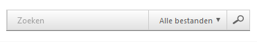
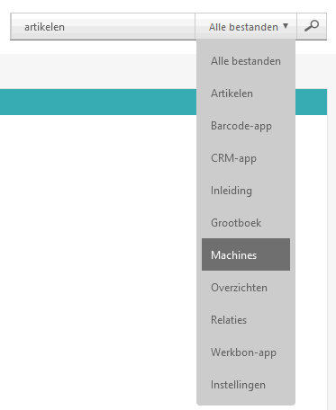
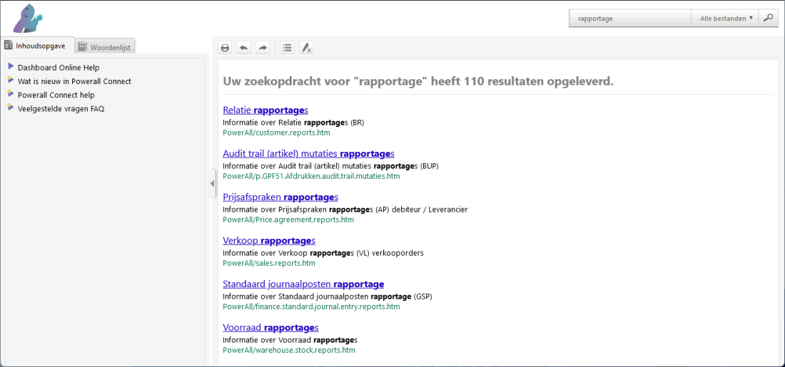
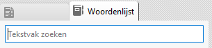
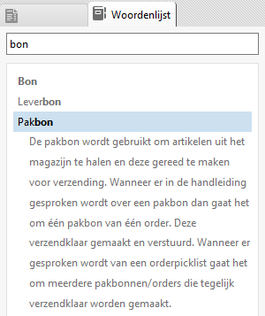

Open onderwerp met navigatie
Hoe zoek ik in deze documentatie iets op?
Zoeken documentatie
In deze Powerall Connect documentatie kan gemakkelijk gezocht worden op een onderwerp of zoekterm, of een gedeelte hiervan. Om te zoeken, doorloopt u de volgende stappen:
-
Ga naar het tekstvak Zoeken rechtsboven.

-
Het is ook mogelijk om in diverse onderwerpen te zoeken.
-

Hierbij wordt gezocht op de term artikelen in de machine hoofdstukken, wat minder resultaten geeft.
Belangrijk: Vergeten niet om de filter weer te resetten naar Alle bestanden.
-
-
Vul hier de zoekterm in, bijv. <rapportage>.
Tip:
Bij het zoeken op meerdere termen, zet deze tussen aanhalingstekens bijv. "Onderhoud artikelen".
Om op meerdere zoekwoorden te zoeken gebruik is het volgende mogelijk
• AND of + beide of &(beperkter resultaat)
• OR een van beide termen.
-
Druk op de Enter toets of klik op Zoek/Vergrootglas knop .
-
In het volgende scherm, selecteer het betreffend onderwerp.

Informatie over het geselecteerde onderwerp wordt weergegeven.
Woordenlijst
Daarnaast kan ook gezocht worden in de Woordenlijst, deze geeft een korte omschrijving van de gebruikte termen of afkortingen in Powerall Connect.
Om te zoeken, doorloopt u de volgende stappen:
-
Ga naar de Woordenlijst linksboven.

-
Vul bij het Tekstvak zoeken, de zoekterm in.
-
Druk op Enter.
-
Selecteer het betreffend woord.

De uitleg wordt weergegeven.
Release notes
In de release notes kan ook gezocht worden op bepaalde woorden. Dit kan per module en/of per versie of in alle versies. Voor meer info zie Wat is nieuw in Powerall Connect?.
Copyright © 1990-2026 Beaver Creek Technology B.V. Disclaimer